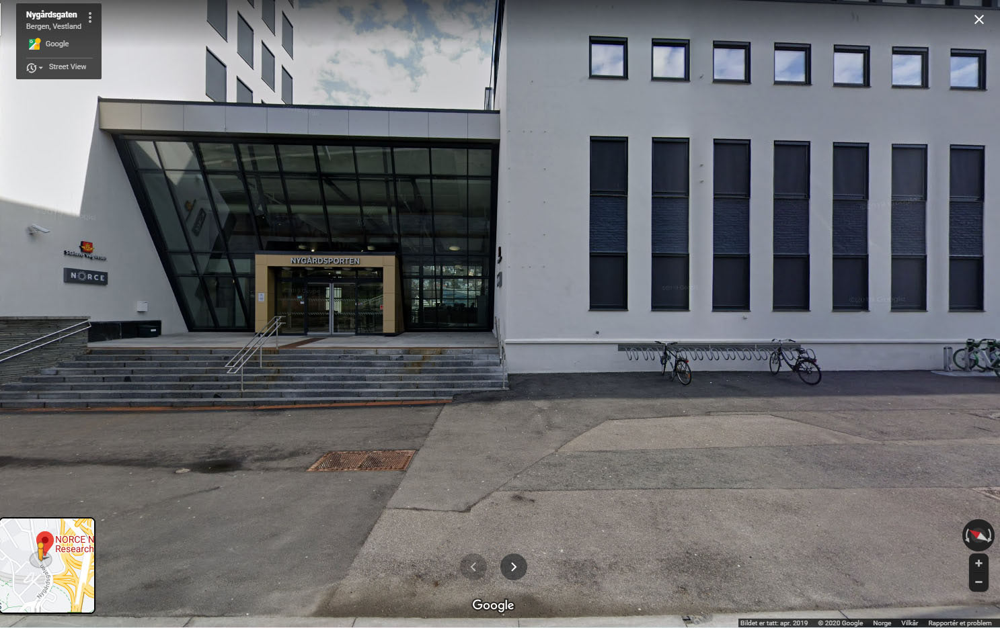

EXPLORE TOGETHER
Come join us at the Community Science Museum where we´re committed to making science accessible to all.
NEWS
Visiting Professor of Aeronautics
It is our pleasure to announce that Prof Sheila Widnall from the Massachusetts Institute of Technology will be delivering 3 lectures on the development of aeronautics and where the future lies in this exciting ‘space’.
Night in the Museum
Get your family together for an exciting night in the museum as you sleep over beside dinosaurs and science displays. Bring your own sleeping bag and get ready to rough it as we go exploring the wonders of science.
Energetica Exhibition on Loan
On loan from the NEMO Science Museum in Amsterdam, the Energetica exhibition is coming to the Community Science Museum. It’s a series of installations that allow visitors to experience the power of the elements as we harness them. From solar energy powering lighting, to ‘Wind Island’ that shows how turbines are able to use and control wind to create power.
VISIT
LOCATION
The museum is located at Nygårdsgaten 112, 5008 Bergen.
ADMISSION
The entrance is free for all.
There are guided tours of the museum that leave every hour. These tours are 70 NOK per person and include a handy printed guide of the museum.
If you would like to organise a guided tour for your Group of 6 or more People, please Contact us to arrange the tour.
HOURS
Monday: Closed
Tuesday: 10:00 - 16:00
Wednesday: 10:00 - 16:00
Thursday: 10:00 - 16:00
Friday: 10:00 - 19:00
Saturday: 9:00 - 16:00
Sunday: 9:00 - 13:00
ACCESSIBILITY
The museum har wheelchair Accessibility ramps. It also has audio and braille display signs for the visually impaired.
FOOD AND DRINK
There is a café Attached to the museum.